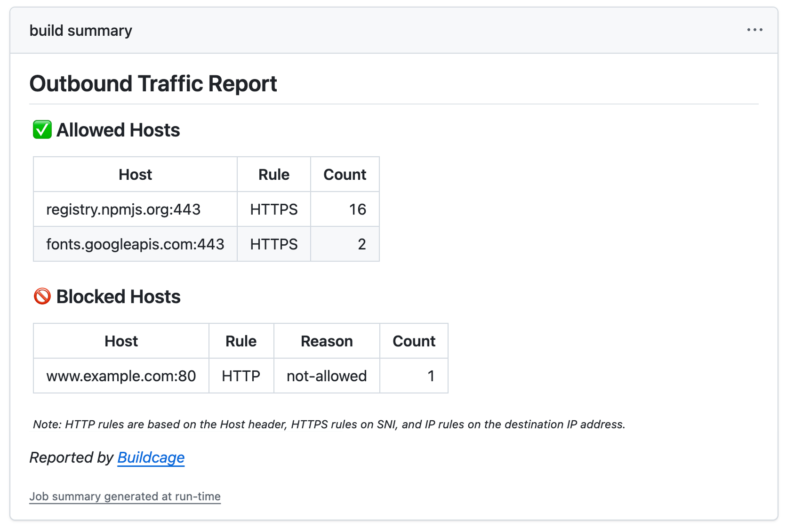
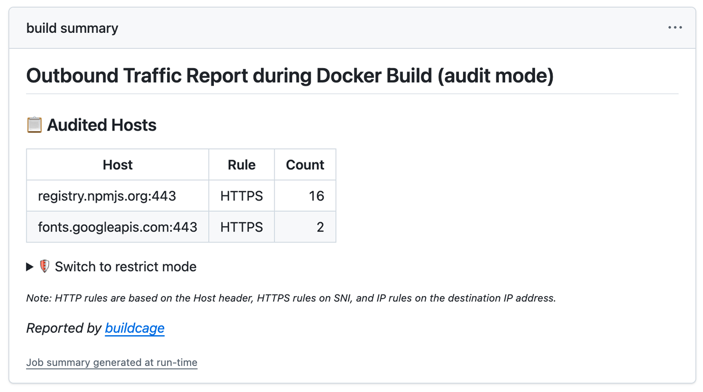

-
Drops into the build you already haveyour Dockerfile, commands, and toolchain stay as they are, in any language
-
One audit run writes the allowlist for yousee what a real build reaches, copy the generated config, switch to restrict
-
Guards the steps that fetch and run codeeach
RUNof adocker build, or a single workflowrun: -
Free and open sourceMIT licensed, free to use, with the implementation open to read
What changes
A build step can normally open a connection to anywhere. Buildcage narrows that to the destinations you named, and records every attempt either way.
Without Buildcage
RUN npm ci && npm run build
- any host on the internet
Nothing is recorded, so nothing looks unusual.
With Buildcage
RUN npm ci && npm run build
- registry.npmjs.org:443
- evil.example.com:443 BLOCKED
Both appear in the report, whichever way they went.

Your allowlist comes from a real build
Start in audit mode. Buildcage watches one real build, then hands you the
configuration for the strict one.
-
Run once in audit mode
One line of configuration. Nothing is blocked yet.
with: proxy_mode: audit -
Read what your build actually reached
Every destination lands in the Job Summary.

-
Copy the configuration it generated for you
The report carries a Switch to restrict mode section with your allowlist already filled in, built from the hosts above.
proxy_mode: restrict allowed_https_rules: >- registry.npmjs.org:443 fonts.googleapis.com:443
Two ways to use it
Same audit → restrict flow either way.
Buildcage for Docker
You build a Docker image. Every RUN step is isolated, with no Dockerfile
changes — Buildcage runs as a remote driver for Docker Buildx and routes the build's
outbound traffic through a proxy that enforces your allowlist.
- name: Start Buildcage in restrict mode
uses: buildcage/docker@abd2df9ccd0b4169e5fd74c5f40481fb95e353fe # v3.0.3
with:
proxy_mode: restrict
allowed_https_rules: |
registry.npmjs.org:443
- name: Set up Docker Buildx
uses: docker/setup-buildx-action@bb05f3f5519dd87d3ba754cc423b652a5edd6d2c # v4.2.0
with:
driver: remote
endpoint: docker-container://buildcage
- name: Build
uses: docker/build-push-action@53b7df96c91f9c12dcc8a07bcb9ccacbed38856a # v7.3.0
with:
context: .
- name: Show Buildcage report
if: always()
uses: buildcage/docker/report@abd2df9ccd0b4169e5fd74c5f40481fb95e353fe # v3.0.3
Buildcage for run: Steps
You run a command directly in a workflow step — installing dependencies, a test suite, a
build script. The command runs in its own network namespace on the runner, keeping the
same UID and $HOME so credentials and caches set up by earlier steps keep
working.
- name: Install and test with outbound network isolation
uses: buildcage/isolated-run@6c105ec20e59259bf0f6f3831397d25273f1c158 # v1.0.3
with:
proxy_mode: restrict
allowed_https_rules: |
registry.npmjs.org:443
run: |
npm ci
npm testHow it compares
The closest tools are Harden-Runner and Bullfrog. Both attach one egress policy to the whole job, covering every step. Buildcage scopes the policy per build instead: the wrapped step gets its own allowlist, but steps outside it aren't covered — protecting a whole job means wrapping each step that needs it.
| Buildcage | Harden-Runner | Bullfrog | |
|---|---|---|---|
| Scope of the policy | One build, or one run: step |
Whole job | Whole job |
| Blocking decides on | SNI / Host header | The domain at DNS time, then the resolved IP | The domain at DNS time, then the resolved IP |
| Private repositories | Included | Enterprise tier | Included |
| Runner platform | Linux only | Linux, macOS, Windows | Linux only |
| External dashboard or account | Not required | Used for the detailed reporting | Not required |
| Also watches files and processes | No | Yes | No |
Both allow whatever IP a name resolved to, with no further check — so on shared hosting, one allowed domain can end up allowing every other site on that IP too. Buildcage's SNI/Host check narrows this but doesn't close it: domain fronting through the same kind of shared infrastructure still gets through, since it doesn't decrypt what's behind an allowed SNI either. Harden-Runner is also a broader agent, correlating network, file, and process events, and its paid plans read inside HTTPS via eBPF — for reporting, not the block decision. Buildcage stays narrower on purpose.
Designed to be adopted
Supply chain attacks keep getting more varied and more sophisticated: typosquatted packages, compromised maintainer accounts, malicious postinstall scripts. No single control catches all of it. Defense-in-depth is the baseline now, not an aspiration.
Buildcage is meant to be one of those layers: even if a secret gets stolen, it can't leave the build environment. Layers like that only help if people actually deploy them. Real network isolation for a build usually means someone on a security team configuring egress rules and maintaining them over time. Most projects, especially small ones, don't have that — not because they don't care, but because it's more setup than a side project or a small team has time for.
Adopting this layer should take nothing more than adding an action. The easier it is to adopt, the more systems get that protection, and the more people's personal information stays where it belongs.
run: Steps